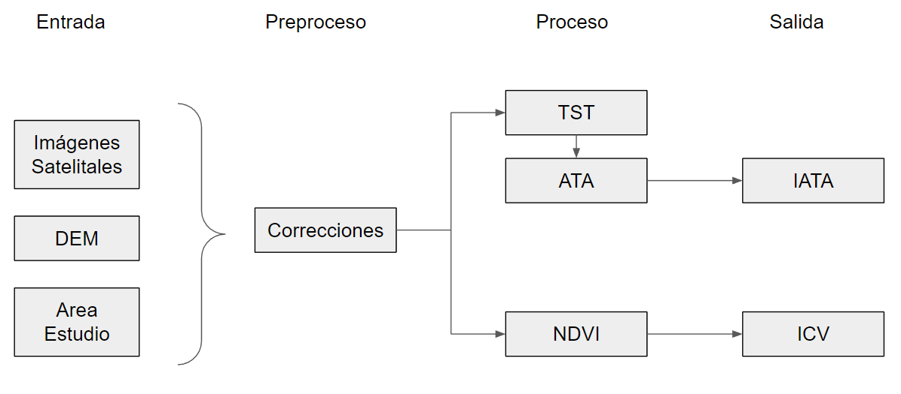
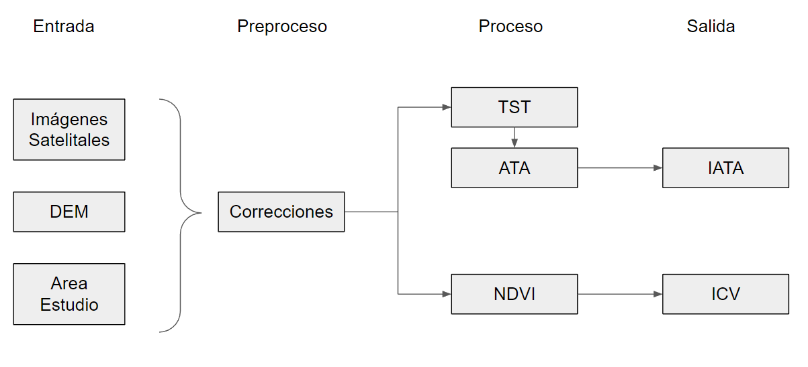
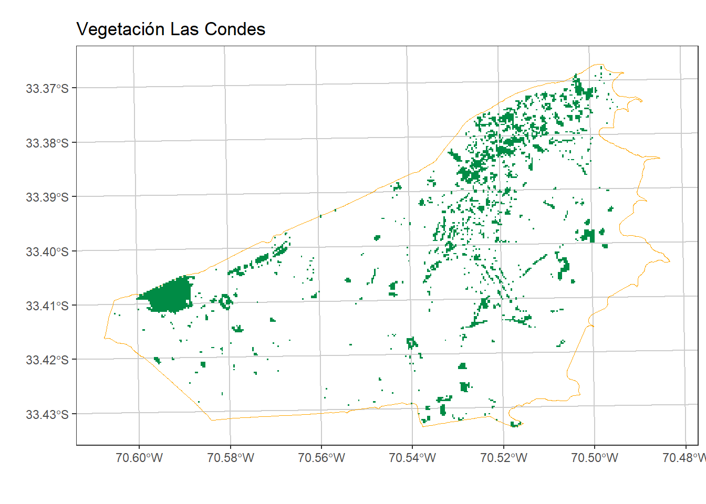

library(sf)
library(raster)
library(dplyr)
library(ggplot2)
library(tmap)
library(exactextractr)
crs_latlon <- "+proj=longlat +datum=WGS84 +no_defs"# geográficas o elipsoidales
crs_utm <- "+proj=utm +zone=19 +south +datum=WGS84 +units=m +no_defs" # UTM o cartográficas3 Dimensión Ambiental
3.1 Resumen
La Dimensión Ambiental tiene por objetivo medir el confort ambiental en un determinado entorno, para lo cual se considera la amplitud térmica y cobertura vegetal de cada manzana urbana y rural. Los datos utilizados para su construcción son imágenes satelitales obtenidas a partir de las plataformas Landsat, Aqua y Terra.
Los indicadores que lo componen son:
ICV : Índice de Cobertura Vegetal.
IATA: Índice de Amplitud Térmica.
Con esto se busca representar el hecho de que existen territorios cuyo confort ambiental es más adecuado para la población, con mayor cobertura de áreas verdes y vegetación más frondoza. Además de diferencias de temperaturas entre invierno y verano menos pronunciadas, facilitando el disfrute de la población.
3.2 Insumos
Para calcular los indicadores que componen esta dimensión es necesario el uso de imágenes satelitales. Estas se encuentran disponibles en plataformas de acceso público pero requieren de ciertos preprocesos de corrección antes de ser usadas para calcular índices, los cuales se explicarán en el próximo apartado.
El proceso de datos satelitales se realiza mediante el uso del tipo de dato raster, el cual representa información en el territorio mediante celdas de tamaño uniforme de resolución fija, cada cual tiene asociado un vector de información particular. Este tipo de dato es complementario al dato de tipo polígono, siendo el dato raster una cuadradilla sobre la cual pueden representarse distintas divisiones administrativas mediante polígonos.

Como se mencionó, estos indicadores usan datos satelitales, los cuales se relacionan con la disciplina de percepción remota la cual entrega un amplio conjunto de conocimientos y tecnologías utilizadas para observación, análisis, la interpretación de fenómenos en el territorio. La percepción remota nos permite efectuar observaciones y mediciones de la superficie terrestre mediante dispositivos remotos instalados sobre plataformas como satélites, aviones y actualmente hasta en drones. Los sensores instalados en estas plataformas miden una gran variedad de datos como radiaciones electromagnéticas, espectro electromagnético, perturbaciones atmosféricas, firmas espectrales y captura de imágenes, entre otros.

Es así que los satélites llevan instrumentos o sensores que miden la radiación electromagnética proveniente del sistema tierra - atmósfera. La intensidad de la radiación reflejada y emitida al espacio es influenciada por las condiciones en la superficie y la atmósfera.
Estas mediciones se expresan en el espectro electromagnético, el cual es un conjunto de frecuencias o longitudes de onda en los que se organiza la radiación electromagnética. Abarca las radiaciones entre los rayos gamma y las ondas de radio.
En nuestro caso usaremos datos de satélites específicos, y bandas particulares, las cuales representan un rango del espectro electromagnético. Con esta información se construyen índices normalizados los cuales se asocian empíricamente a distintos elementos, como vegetación, suelo construido o presencia de cuerpos de agua.

Los distintos insumos para el cálculo son:
Imágenes de Landsat 8
DEM: Modelo de Elevación Digital
Vapor de Agua
Área de Estudio
3.2.1 Landsat 8
El insumo principal para estos indicadores es la imaginería satelital de los sensores OLI y TIRS de la plataforma satelital Landsat 8 del United States Geological Survey (USGS).
Este satélite posee una cobertura global de imágenes satelitales a una resolución de 30 metros, y revisita un mismo punto sobre la superficie de la tierra cada 16 días. Cada escena satelital cubre una superficie terrestre de 180 km por 190 km aproximadamente.
Como ejemplo, se muestra el proceso de la región de Ñuble. Debido a la extensión de esta, fueron necesarias 3 escenas satelitales para cubrirla por completo, tal como se aprecia en la imagen.

3.2.2 DEM
Junto con las imágenes satelitales, se necesita una cobertura que permita realizar las correcciones topográficas de las imágenes satelitales. El Modelo Digital de Elevación, o DEM en sus siglas en inglés, permite el cálculo de las coberturas de pendientes y orientación de laderas, necesarias para el proceso de corrección topográfica.
El DEM utilizado en ese caso corresponde al generado por la plataforma ASTER GDEM, con una resolución de 30 metros, el cual tiene una cobertura global. En ese caso, se utiliza un DEM que cubre la totalidad de la región de Ñuble.

3.2.3 Vapor de Agua
Para el cálculo de la temperatura superficial, es necesario también el producto de vapor de agua atmosférico del sensor MODIS, el cual se descarga desde la plataforma web LAADS DAAC de la NASA. Este insumo se descarga para la misma fecha de las imágenes satelitales, y deben coincidir espacialmente entre sí. A continuación se aprecia una de las imágenes de vapor de agua.

El Vapor de Agua de MODIS posee una resolución espectral de 1 kilómetro, y revisita un mismo punto de la superficie terrestre entre 3 a 4 veces por día.
3.2.4 Area de Estudio
El área de estudio se define a partir de la unidad administrativa del área de interés, en este caso los límites de la Región de Ñuble. Luego, se generan polígonos de áreas de estudio independientes para cada escena satelital, identificadas por sus coordenadas Path y Row.
Estos polígonos deben coincidir con la extensión de todos los insumos satelitales, para evitar la contaminación de valores nulos o NoData. Las áreas de estudio consideradas para la región del Ñuble son las que se aprecian en la imagen.

Este paso corresponde al inicio del trabajo con las imágenes satelitales. Son seleccionadas las bandas espectrales que se utilizarán y luego son integradas en un Brick. Posteriormente, este Brick es recortado mediante un Crop con el archivo de área de estudio correspondiente a la escena satelital. Este proceso se repite para cada una de las imágenes satelitales multiespectrales
3.3 Proceso
3.3.1 Diagramas
El proceso general comprende la carga de los insumos de entrada, luego la aplicación de preprocesos de corrección de imagenes, los cuales comprenden la corrección topográfica, y de reflectancia. Luego de esto se calculan índices en el la etapa de procesamiento, los cuales son usadas para calcular los indicadores de salida.

3.3.2 Preproceso
3.3.2.1 Extraccion por area de estudio
Este paso corresponde al inicio del trabajo con las imágenes satelitales. Son seleccionadas las bandas espectrales que se utilizarán y luego son integradas en un Brick. Posteriormente, este Brick es recortado mediante un Crop con el archivo de área de estudio correspondiente a la escena satelital. Este proceso se repite para cada una de las imágenes satelitales multiespectrales.
3.3.2.2 Reflectancia
A partir de los datos satelitales descargados se busca obtener la reflectancia usando correcciones a los valores disponibles usando factores numéricos disponibles en la metadata de la serie de datos del satélite en cuestión. Estos se aplican para los datos del satélite Landsat y OLI.
La expresión utilizada para transformar a radiancia los valores digitales (DN) de las bandas térmicas de Landsat 8 fue:
\[ L_\lambda = M_L \times Q_{cal} + A_L \]
Donde:
\(L_\lambda\) es la Radiancia espectral resultante (TOA)
\(M_L\) es un factor de rescalamiento multiplicativo de radiancia (metadata)
\(A_L\) es un factor de rescalamiento aditivido de radiancia (metadata)
\(Q_{cal}\) Valor calibrado del pixel (DN, o numero digital)
Por otro lado, los valores espectrales de las bandas del sensor OLI, pueden transformarse a reflectancia usando la expresión:
\[ \rho _{\lambda} = \frac{M_\rho Q_{cal} + A_\rho}{sin(\theta_e)} \] Donde:
\(\rho _{\lambda}\) es la reflectancia resultante (TOA)
\(M_\rho\) : es un factor de rescalamiento multiplicativo de radiancia (metadata)
\(A_\rho\): es el factor de reescalamiento Aditivo (metadata)
\(\theta_e\) : ángulo de elevación solar (en grados) (metadata)
3.3.2.3 Corrección Topográfica
Consiste en encontrar el ángulo de incidencia de los rayos solares en la superficie. Esta corrección se obtiene a través de un modelo de iluminación presente en (Colby 1991). Se utilizan los valores del azimut y la elevación solar, junto con los valores de la pendiente del terreno y su orientación, ambos obtenidos a través del procesamiento del MDE ASTER.
\[ cos(i) = cos(\theta_s)\cdot cos(\theta_n)+sin(\theta_s)\cdot sin(\theta_n)\cdot cos(\phi_s - \phi_n) \]
Donde:
\(cos(i)\): coseno ángulo de incidencia
\(\theta_s\): ángulo cenital solar
\(\theta_n\): Pendiente de la superficie
\(\phi_s\): azimut solar
\(\phi_n\): orientación de la superficie
Considerando en la expresión anterior que la pendiente de la superficie es nula (superficie de referencia), entonces es posible aplicar el algoritmo de corrección topográfica \(C\), propuesto por (Teillet, Guindon, and Goodenough 1982) a través de la expresión:
\[ L_{\lambda Corr} = L_\lambda \left[\frac{Cos(v)+C}{Cos(i)+C}\right] \]
Con:
\(L_{\lambda corr}\): Reflectancia Corregida
\(Cos(v)\): Coseno para una superficie horizontal
\(C=\frac{b}{m}\) obetenido de la regresión \(L_\lambda=b+m\cdot cos(i)\) usado minimos cuadrados entre la reflectancia de cada banda espectral y el modelo de iluminación.
3.3.3 Cálculo de Indices
3.3.3.1 TST
La Temperatura Superficial Terrestre (TST) corresponde a una variable física que permite obtener datos de temperatura en grados Celsius a partir del procesamiento de las imágenes satelitales. En este caso, se utilizaron las imágenes satelitales mencionadas anteriormente para determinar las TST en las temporadas frías y cálidas del año (invierno y verano), las cuales luego son integradas para calcular la Amplitud Térmica Anual (ATA).
Para estimar la temperatura superficial terrestre (TST) se utilizó el algoritmo monocanal o single channel (SC), propuesto por (Jim’enez-Muñoz and Sobrino 2003). Este método fue escogido debido a su flexibilidad en términos de las diversas condiciones atmosféricas y a su adaptabilidad a distintos tipos de sensores con bandas espectrales en la ventana atmosférica que se encuentra entre las longitudes de onda de 10 – 12 mm. Para la estimación de la TST se necesitó de cinco magnitudes fundamentales:
La radiancia de la banda termal
La temperatura de brillo en el sensor
La emisividad de la superficie
El contenido de vapor de agua en la atmósfera
Los centros de los rangos espectrales asociados a las longitudes de onda de las bandas térmicas consideradas
Cuatro de estas magnitudes se obtuvieron a través del procesamiento directo de las bandas espectrales de cada imagen Landsat, mientras que el vapor de agua provino del sensor MODIS. La radiancia espectral de las bandas termales se obtuvo en la etapa de corrección de los insumos espaciales. Por su parte, los parámetros y el algoritmo para obtener la temperatura de brillo en el sensor (T_B) se obtuvieron del Programa Landsat (2002) y el sitio web de la USGS.
A su vez, la emisividad de la superficie (\(\epsilon_{sc}\)) utilizada en el método monocanal, se estimó considerando el conocimiento a priori de la emisividad de algunas superficies y su relación estadística con algunos valores umbrales del logaritmo natural del NDVI. Para calcular la emisividad se usaron los valores umbrales del índice vegetacional, rangos propuestos por (VAN DE GRIEND and OWE 1993).
La TST se obtuvo directamente en grados Celsius, utilizando el método monocanal de Jiménez (2003 y 2014). Las funciones de transferencia atmosférica \(\psi_1\), \(\psi_2\), \(\psi_3\) , fueron obtenidas como función del vapor de agua atmosférico (w), según las expresiones y parámetros considerados para la banda 11:
\[ \psi_1 = 0.04019w^2 - 0.02916w + 1.01523 \]
\[ \psi_2 = -0.38333w^2 - 1.50294w + 0.20324 \]
\[ \psi_3 = 0.00918w^2 - 1.36072w - 0.27514 \]
Para estimar la TST se integraron todos los parámetros generados en el algoritmo monocanal (SC) generalizado de (Jim’enez-Muñoz and Sobrino 2003):
\[ TST_{sc}=\gamma\left[ \epsilon^{-1} \left( \psi_1L_{\lambda corr } + \psi_2\right) + \psi_3 \right] + \delta - 273,15 \]
Con las siguienest aproximaciones de los parámetros gamma (\(\gamma\)) y delta (\(\delta\)):
\[ \gamma = \left\{ \frac{c_2L{\lambda corr}}{T^2_{B10}} \left[ \frac{\lambda^4}{c_1} L_{\lambda corr} +\lambda^{-1}\right] \right\}^{-1} \]
Donde:
\(L_{\lambda corr}\) es la Radiancia espectral corregida topográficamente de la banda 11.
\(T_{B10}\) es la temperatura de brillo banda 11 (°K)
\(\lambda\) es el centro del rango de longitud de onda de la banda 11.
Tanto las TST de verano como las de invierno se obtienen en formato raster con resolución de 30 por 30 metros. Luego se procedió a obtener un compuesto para verano y otro para invierno. Finalmente, ambos compuestos se integran en uno solo que considera la diferencia entre la TST de verano y de invierno, el que se denomina Amplitud Térmica Anual (ATA).
3.3.3.2 ATA
La Amplitud Térmica Anual (ATA) corresponde a una imagen raster que contiene los valores producto de la diferencia entre las temperaturas superficiales de verano y de invierno. Representa las diferencias de temperatura entre ambas temporadas, y es el insumo principal para el cálculo del Indicador de Amplitud Térmica Anual (IATA). Mientras los valores de ATA sean más altos, representan una mayor diferencia entre las temperaturas de invierno y verano en una misma área. Por el contrario, si los valores de ATA son bajos, significa que la diferencia entre los valores de temperatura de invierno y verano es menor en una misma área, o que los valores son muy similares entre sí.
3.3.3.3 NDVI
El NDVI (Normalized Difference Vegetation Index), índice espectral que permite identificar áreas vegetadas a partir de la definición de un valor umbral mínimo según (Myneni et al. 1995). El NDVI trabaja con las bandas del infrarrojo y del rojo, dado que son las bandas donde más y menos reflejan la vegetación, respectivamente. Este fue obtenido mediante la expresión:
\[ NDVI = \frac{NIR-RED}{NIR-RED} \]
Los valores de este índice se encuentran en el rango de -1 a 1, y usualmente se considera que los valores mayores o iguales a 0,2 corresponden a vegetación. Para determinar un valor umbral mínimo de vegetación tanto para invierno como para verano, se van testeando valores umbrales desde 0,2 hacia arriba, sumando cada vez 0,05 al umbral inicial, hasta llegar a visualizar una cobertura vegetal que corresponda con la vegetación visible en un basemap de alta resolución y a la composición de bandas en color verdadero de la imagen satelital que dio origen al NDVI. A partir de estos valores umbrales se obtienen dos coberturas de vegetación, una de invierno y otra de verano, las cuales se integran en una sola cobertura anual de vegetación, sumando espacialmente los píxeles considerados como vegetación. Esta cobertura vegetal posteriormente será integrada a las coberturas vectoriales para calcular el Indicador de Cobertura Vegetal (ICV).
3.3.4 Cálculo de Indicadores
3.3.4.1 ICV

Para espacializar estos resultados, fueron considerados los polígonos de las manzanas para las áreas urbanas y los de las entidades rurales para las áreas rurales. El procedimiento para atributar de valores cada uno de los polígonos que componen las coberturas consistió en calcular la superficie cubierta por vegetación en cada polígono, y luego comparando esa superficie con respecto a la superficie total del polígono. Por esto, el resultado del indicador se expresa en valores de 0 a 100, lo que representa el porcentaje de superficie cubierto de vegetación de cada polígono. Este indicador permite que cada polígono cuente con una expresión porcentual de su superficie cubierta con vegetación. Mientras mayor sea este valor, representa que un mayor porcentaje de la superficie se encuentra cubierta por vegetación, incluso considerando la totalidad del polígono (100%). Por el contrario, es posible que algunos polígonos tengan valores 0, correspondientes a aquellas áreas que no poseen cobertura vegetal.
3.3.4.2 IATA
El Indicador de Amplitud Térmica Anual (IATA) se refiere a la diferencia entre la Temperatura Superficial Terrestre (TST) máxima y mínima dentro de un año. La TST máxima corresponde a la época de verano, mientras que la TST mínima corresponde al invierno, y se calcula tal como se aprecia en la siguiente fórmula.
\[ IATA = TST_{ver} - TST_{inv} \]
La ATA sale procesada en formato raster, con la misma resolución de las TST. La información del formato raster se traspasa finalmente a los polígonos de manzanas en el caso de las áreas urbanas y las entidades en el caso de las áreas rurales. Este indicador permite que cada polígono cuente con una temperatura expresada en grados Celsius, el que representa la amplitud térmica entre el invierno y el verano. Mientras mayor sea este valor, representa que la diferencia de temperaturas entre el verano y el invierno es significativa. Mientras que, si el valor es menor, implica una diferencia térmica marginal entre el verano y el invierno. Puntualmente, puede ocurrir que algunos polígonos obtengan una amplitud térmica negativa, lo que implica que, en ese sector las temperaturas de invierno fueron localmente mayores a las obtenidas en verano.
3.4 Aplicación
3.4.1 ICV
Para ilustrar estos procesos se calcularán los indicadores ambientales para la comuna de Las Condes. Para esto comenzamos por configurar el entorno de trabajo cargando las librerías necesarias para el proceso y definiendo ciertos parámetros claves como los sistemas de proyección de coordenadas:
Con esto cargamos los datos necesarios para el proceso, la información satelital contenida en un archivo .tif y las manzanas de la comuna de las Condes:
OLI <- brick("data/corte_rm_m.tif")
mzs <- readRDS("data/manzanas_lc.rds")Realizamos un preproceso inicial, rescatando el contorno de la comuna, asignando información de nombres al archivo de información satelital y generando un recorte del area de estudio comunal.
# nombre bandas
names(OLI) <- c("aerosol", "blue", "green", "red", "nir", "swir1", "swir2", "thermal")
# contorno comunal
comuna <- st_as_sf(mzs) %>% st_buffer(100) %>% st_union() %>% st_buffer(-100) %>% as_Spatial()
# recorte
comuna_img <- mask(crop(OLI, extent(comuna), snap="out"), comuna)
# latlon a utm
comuna_img <- projectRaster(comuna_img, crs = crs_utm)Con esto podemos visualizar la información satelital de la comuna:
plotRGB(comuna_img, r = 4, g = 3, b = 2, stretch = "lin")A partir de esto podemos calcular los índices que son la base de los indicadores: NDVI
NDVI <- function(img, i, k) {
bi <- img[[i]]
bk <- img[[k]]
vi <- (bk - bi) / (bk + bi)
return(vi)
}
NDVI_com <- NDVI(comuna_img, 4, 5)
NDVI_com_df <- raster::as.data.frame(NDVI_com, xy = TRUE) %>% na.omit()Este resultado puede visualizarse para revisar su pertinencia:
pal_ndvi<- colorRampPalette(c("gray20", "yellow", "green","springgreen4"))( 200 )
ggplot() +
geom_raster(data = NDVI_com_df ,
aes(x = x, y = y,
fill = layer)) +
scale_fill_gradientn(name = "NDVI", colors = pal_ndvi)+
coord_fixed()+
ggtitle(paste0("NDVI de Las Condes") ) +
labs(x="",y="") +
theme_bw() +
theme(panel.grid.major = element_line(colour = "gray80"),
panel.grid.minor = element_line(colour = "gray80"))Ahora es necesario definir un umbral a partir del cual se considera un pixel como cubierto de vegetación. Para esto examinamos la distribución empírica de los valores del índice normalizado:
hist(NDVI_com, col="springgreen4", main="Histograma NDVI", ylab="Número de Pixeles", xlab="valor NDVI")Con esto podemos definir el umbral de corte en 0.3, lo que permite descartar vegetación no frondoza en el territorio.
#función para definir umbral
corte_eq_may <- function(value) {
function(x) {
ifelse(x >= value, 1, NA)
}
}
vegetacion <- calc(NDVI_com, fun = corte_eq_may(value = 0.30))
vegetacion_df <- raster::as.data.frame(vegetacion, xy = TRUE) %>% na.omit()El resultado de este corte puede revisarse gráficamente:
ggplot() +
geom_sf(data = st_as_sf(comuna), fill = NA, color ="orange",
alpha=0.8, size= 0.5)+
geom_raster(data = vegetacion_df ,
aes(x = x, y = y,
fill = layer)) +
scale_fill_gradientn(name = "Veg", colors = "springgreen4")+
ggtitle("Vegetación Las Condes") +
theme_bw() + labs(x="", y="")+
theme(panel.grid.major = element_line(colour = "gray80"),
panel.grid.minor = element_line(colour = "gray80"),
legend.position = "none")
A partir de esto es posible contar los pixeles dentro de cada manzana que están cubiertos por vegetación, y así calcular el indicador de Cobertura Vegetal (ICV):
mz_comuna <- mzs %>% st_as_sf() %>%
mutate(AREA= as.numeric(st_area(.))) %>%
mutate(pix_veg = exact_extract(vegetacion,y = ., 'sum', progress = FALSE)) %>%
mutate(area_veg = pix_veg * 30 * 30) %>% # resolución espacial landsat (30*30)
mutate(ICV = round((area_veg /AREA)*100, 1))Con esto podemos visualizar el resultado del indicador ICV:
ggplot() +
geom_sf(data = mz_comuna, aes(fill = ICV), color ="gray70",
alpha=0.8, size= 0.1)+
scale_fill_distiller(palette= "Greens", direction = 1)+
ggtitle("Indicador de Cobertura Vegetal (ICV) - Urbano") +
theme_bw() +
theme(panel.grid.major = element_line(colour = "gray80"),
panel.grid.minor = element_line(colour = "gray80"))3.4.2 IATA
Para ilustrar el proceso de trabajo de el indicador de amplitud térmica comenzamos por cargar las imágenes raster con la información de temperatura superficial para invierno y verano:
tst_inv <- raster("data/tst_inv_R13.tif")
tst_ver <- raster("data/tst_ver_R13.tif")Luego preprocesamos estos datos, generando recortes comunales de la información a trabajar:
# contorno manzanas
comuna <- st_as_sf(mzs) %>% st_buffer(100) %>% st_union() %>% st_buffer(-100) %>% as_Spatial()
# contonro invierno y verano (respetar crs)
comuna_inv <- st_transform(st_as_sf(comuna), crs = crs(tst_inv))
comuna_ver <- st_transform(st_as_sf(comuna), crs = crs(tst_ver))
# recorte
comuna_inv <- mask(crop(tst_inv, extent(comuna_inv), snap="out"), comuna_inv)
comuna_ver <- mask(crop(tst_ver, extent(comuna_ver), snap="out"), comuna_ver)
# reproyectar a utm
comuna_inv <- projectRaster(comuna_inv, crs = crs_utm)
comuna_ver <- projectRaster(comuna_ver, crs = crs_utm)Con esto podemos calcular la diferencia de temperaturas entre invierno y verano:
comuna_ver <- resample(comuna_ver,
raster(extent(comuna_inv),
nrow = nrow(comuna_inv),
ncol = ncol(comuna_inv),
crs = crs_utm))
amplitud <- overlay(comuna_inv, comuna_ver, fun = function(x, y) {y - x})# viz amplitud
plot(amplitud, main = "Diferencia Temperatura Las Condes")Y luego asignar el promedio de diferencias a las manzanas correspondientes
mz_comuna <-
mzs %>% st_as_sf() %>%
st_transform(crs_utm) %>%
mutate(IATA = exact_extract(amplitud, mzs, 'mean', progress = FALSE))tm_shape(mz_comuna) + tm_polygons("IATA", style = "jenks") + tm_layout(title = "Indicador de Amplitud Térmica")